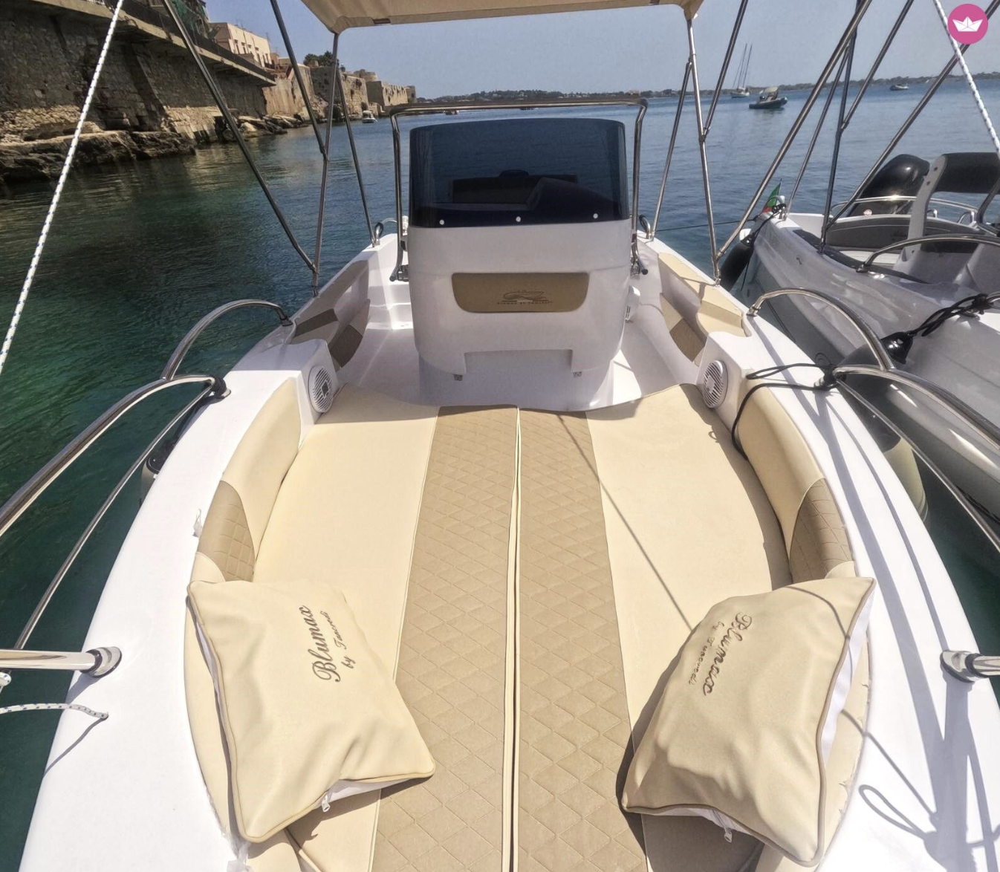

Wat gaan we doen
Onze plannen
Twee hoofdstukken: één dag op het water (7 juli), en de rest exploring vanuit Ortygia met de auto.
⛵ 7 juli

De Bootdag 🌊
40pk bootje van Porto Grande langs Plemmirio, Grotta del Bue Marino, Ognina en Fontane Bianche. Snorkelen bij Capo Murro di Porco, lunch aan wal, chillen in kristalhelder water.
~2,5u varen~35 km8 stopsSnorkelspots
Bekijk de route →
🚗 Auto trips
Dagtrips vanuit Ortygia 🏛
Barok Noto, vissersdorpje Marzamemi, Vendicari natuurreservaat, hidden gems zoals Ferla en Brucoli. Alles binnen 1 uur rijden. Filter op wat je zin in hebt.
13 spotsFilter per typeFoto's + tips
Ontdek de trips →